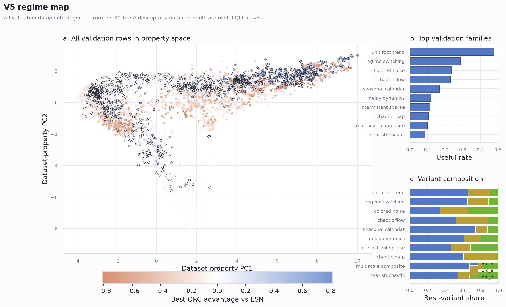

The short answer
QRC is most promising when the time series carries a slow hidden state: drifting trends, long memory, regime changes, low-frequency structure, or correlated fluctuations.
QRC is usually less promising when a standard ESN already captures the dynamics easily, such as clean periodic signals, short-memory dynamics, or mostly random noise.
What was compared: fixed QRC designs against a fixed ESN baseline, without tuning each dataset separately.
What was measured: 30 time-series properties, such as persistence, stationarity, entropy, noise, and spectral structure.
What the tool says: either "QRC is worth testing" or "ESN is probably enough."
Markers that make QRC worth testing
- Slow drift The level or volatility changes over time instead of returning quickly to one stable average.
- Long memory Events from far in the past still help predict what happens next.
- Regime changes The series switches between states, for example calm periods and unstable periods.
- Low-frequency structure Important information lives in slow cycles or broad trends, not only in the most recent values.
Markers where ESN is usually enough
- Clean periodic signals The pattern repeats clearly and the ESN can follow it well.
- Short-memory dynamics The next value mostly depends on the recent past.
- Unstructured noise There is little stable information for any reservoir to exploit.
- Generic chaos alone Chaotic behavior by itself is not enough to make QRC the better choice.
One picture summary
Each point is a synthetic time-series dataset. The map shows where the benchmark finds QRC-favorable regions and where the ESN remains the stronger default.

Analyze your own time series
This runs directly in the page. Choose or paste a CSV, and the browser computes a fast QRC triage score. The file is not uploaded to a server.
The website uses a lightweight browser model trained on atlas markers. The full reproducible Python tool remains the reference analysis for paper-grade reporting.
For reviewers and researchers
The public repository contains the atlas generation code, frozen model protocol, paper draft, figures, and reproducibility scripts.